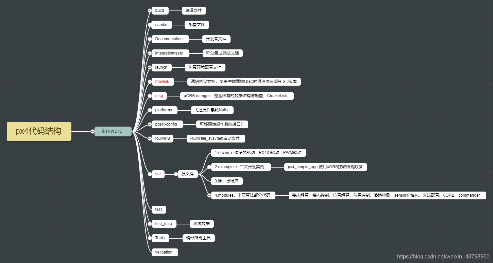

相关知识： 实时操作系统RTOS（ 什么是实时操作系统（RTOS） - 知乎 (zhihu.com)）、嵌入式操作系统（ 什么是嵌入式操作系统 常见的嵌入式系统有哪些 - 知乎 (zhihu.com)）
操作系统
操作系统(Operating System)，简称OS，是管理计算机硬件与软件资源的计算机程序，同时也是计算机系统的内核与基石。
根据计算机组成原理，计算机由CPU(运算器+控制器)，存储器，输入，输出设备组成。
根据操作系统原理，OS由调度，内存管理，文件系统，进程间通信，计算机网络组成。
CPU对应OS的调度(Schedule);
内存对应OS的内存管理(Memory Management);
存储器对应OS的文件系统(File System)；
输入/输出设备对应OS的驱动，也可以认为是文件系统(一切皆文件);
进程间通信(Internal Process communacation)是OS提供给应用程序的通信方式。
OS的作用就是用来管理计算机的硬件资源，并隔离硬件，提供给应用开发抽象的统一接口。另外，其本身作为系统软件，也要占用一定的硬件资源。
实时操作系统
RTOS定义： 又称即时操作系统，它会按照排序运行、管理系统资源，并为开发应用程序提供一致的基础。实时操作系统与一般的操作系统相比，最大的特色就是“实时性”，如果有一个任务需要执行，实时操作系统会马上（在较短时间内）执行该任务，不会有较长的延时。这种特性保证了各个任务的及时执行。
实时运算（Real-time computing）是计算机科学中对受到“实时约束”的计算机硬件和计算机软件系统的研究，实时约束像是从事件发生到系统回应之间的最长时间限制。实时程序必须保证在严格的时间限制内响应。
实时操作系统中都要包含一个实时任务调度器，这个任务调度器与其它操作系统的最大不同是强调：严格按照优先级来分配CPU时间，并且时间片轮转不是实时调度器的一个必选项。
实时操作系统的概念用于解决两个问题：一个是早期的CPU任务切换的开销太大，实时调度器可以避免任务频繁切换导致CPU时间的浪费；另一个是在一些特殊的应用场景中，必须要保证重要的任务优先被执行。
实时操作系统的设计核心思想：
- 1. 实时的消息、事件处理机制：常规的操作系统中，消息队列都是按照FIFO（先进先出）的方式进行调度，如果有多个接受者，那么接受者也是按照FIFO的原则接受消息（数据），但实时操作系统会提供基于优先级的处理方式：两个任务优先级是分别是10和20，同时等待一个信号量，如果按照优先级方式处理，则优先级为10的任务会优先收到信号量。
- 2. 提供内核级的优先级翻转处理方式：实时操作系统调度器最经常遇到的问题就是优先级翻转，因此对于类似信号量一类的API，都能提供抑止优先级翻转的机制，防止操作系统死锁。（ 优先级翻转是当一个高优先级任务通过信号量机制访问共享资源时，该信号量已被一低优先级任务占有，因此造成高优先级任务被许多具有较低优先级任务阻塞，实时性难以得到保证。）
- 3. 减少粗粒度的锁和长期关中断的使用：这里的锁主要是指自旋锁(spinlock)一类会影响中断的锁，也包括任何关中断的操作。在Windows和Linux的驱动中，为了同步的需要，可能会长期关闭中断，这里的长期可能是毫秒到百微秒级。但实时操作系统通常不允许长期关中断。对于非实时操作系统来说，如果收到一个外部中断，那么操作系统在处理中断的整个过程中可能会一直关中断。但实时操作系统的通常做法是把中断作为一个事件通告给另外一个任务，interrupt handler在处理完关键数据以后，立即打开中断，驱动的中断处理程序以一个高优先级任务的方式继续执行。
- 4. 系统级的服务也要保证实时性：对于一些系统级的服务，比如文件系统操作，非实时系统会缓存用户请求，并不直接把数据写入设备，或者建立一系列的线程池，分发文件系统请求。但实时系统中允许高优先级的任务优先写入数据，在文件系统提供服务的整个过程中，高优先级的请求被优先处理，这种高优先级策略直到操作完成。这种设计实际上会牺牲性能，但实时系统强调的是整个系统层面的实时性，而不是某一个点（比如内核）的实时性，所以系统服务也要实时。由于应用场景的差异，会出现有些用户需要实时性的驱动，有些用户需要高性能的驱动，因此实时操作系统实际上要提供多种形式的配置以满足不同实时性需求的用户。
- 5. 避免提供实时性不确定的API：多数实时操作系统都不支持虚拟内存（page file/swap area），主要原因是缺页中断（page fault）会导致任务调度的不确定性增加。实时操作系统很多都支持分页，但很少会使用虚拟内存，因为一次缺页中断的开销十分巨大（通常都是毫秒级），波及的代码很多，导致用户程序执行的不确定性增加。实时操作系统的确定性是一个很重要的指标，在某些极端场景下，甚至会禁用动态内存分配（malloc/free），来保证系统不受到动态的任务变化的干扰。
- 6. 提供针对实时系统调度的专用API：比如ARINC 653标准中就针对任务调度等作出了一系列的规定，同时定义了特定的API接口和API行为，这些API不同于POSIX API，如果实时系统要在航空设备上使用，就可能需要满足ARINC 653（ ARINC 653 标准介绍 ARINC 653 : ARINC公司的600 系列标准的一部分，全名“ Avionics Application Software Standard Interface” 。 是为满足综合模块化航电系统（IMA）要求，基于 计算机资源时空分区的编程接口标准。 标准包括5部分，其中Part 是强制执行标）的规范。
- 7. 降低系统抖动：由于关中断等原因，通常情况下，操作系统的调度器不会太精确的产生周期性的调度，执行周期存在误差和变动，比如x86早期的默认60的时钟周期（clock rate），抖动范围可能在15-17ms之间。但一个设计优秀的实时操作系统能把调度器的抖动降低到微秒甚至百纳秒一级，在像x86这种天生抖动就很大的架构上，降低系统抖动尤其重要。
- 8. 针对实时性设计的SMP和虚拟化技术：SMP（多核）场景的实时调度是很困难的，这里还涉及到任务核间迁移的开销。针对SMP场景，多数实时操作系统的设计都不算十分优秀，但比起普通操作系统来说，其实时性已经好很多了。同时实时操作系统的虚拟化能从hypervisor（ Hypervisor是一种运行在物理服务器和操作系统之间的中间软件层,可允许多个操作系统和应用共享一套基础物理硬件，因此也可以看作是虚拟环境中的“元”操作系统，它可以协调访问服务器上的所有物理设备和虚拟机，也叫虚拟机监视器（Virtual Machine Monitor）。）层面上提供虚拟机级别的实时调度，虚拟机上可以是另外一个实时系统，也可以是一个非实时系统。
嵌入式操作系统
定义： 是一种支持嵌入式系统应用的操作系统软件，它是嵌入式系统的重要组成部分。嵌入时操作系统具有通用操作系统的基本特点，能够有效管理复杂的系统资源，并且把硬件虚拟化。
嵌入式系统的定义：
传统定义（狭义嵌入式）：嵌入式系统是以应用为中心，以计算机技术为基础，并且软硬件可裁剪，适用于应用系统对功能、可靠性、成本、体积、功耗有严格要求的专用计算机系统。
当前客观定义（泛嵌入式）：除PC之外的一切计算机系统都可以叫嵌入式系统。典型代表：智能手机、工业机器人、汽车电子、航空航天（四轴飞行器）、安防监控（IPC）等。
从应用角度可分为通用型嵌入式操作系统和专用型嵌入式操作系统。 Linux、VxWorks、Windows 等属于通用型操作系统； Smart Phone、Pocket PC、Symbian等属于专用型操作系统。
按实时性可分为实时嵌入式操作系统和非实时嵌入式操作系统。
实时嵌入式操作系统主要面向控制、通信等领域。如WindRiver公司的VxWorks、ISI的pSOS、Nuttx和chibos等。
非实时嵌入式操作系统主要面向消费类电子产品。这类产品包括PDA、移动电话、机顶盒、电子书、WebPhone等。如微软面向手机应用的Smart Phone操作系统。
嵌入式系统特点：
- 低功耗（BLE、zigbee、低功耗Wifi）
- 联网化（4G、BT、zigbee、wifi）
- RISC CPU（ARM、MIPS）
- OS（Linux、Android、RTOS）
- 分层（底层、OS层、应用层）
Nuttx 嵌入式实时操作系统
定义：是一个实时嵌入式操作系统（RTOS），强调标准兼容和小型封装，具有从8位到32位微控制器环境的高度可扩展性。NuttX 主要遵循 Posix 和 ANSI (美国国家标准协会)标准，对于在这些标准下不支持的功能，或者不适用于深度嵌入环境的功能（如 fork()），采用来自 Unix 和常见 RTOS （如 VxWorks）的额外的标准 API。
Posix:可移植操作系统接口。故名思议，由于当时Unix诞生之后，由于各个厂商都实现自己的Unix（都敢使用Unix，由于版权的问题），接口的不统一，导致在各个厂商下基于不同的操作系统开发变得很乱，为了解决这一问题，便有了POSIX标准。POSIX标准的诞生是为了统一个操作系统的接口，方便开发者开发程序，写出可移植的代码程序。基于POSIX标准的库函数都是可以在支持此标准的操作系统平台上移植的。
关键特征：
- 标准兼容
- 核心任务管理
- 模块化设计
- 完全可抢占
- 天然可扩展
- 高度可配置
- 图形化配置工具
- 容易扩展到新的处理器架构、 SoC 架构或板级架构
- FIFO 和轮转调度(与实时操作系统的设计思路是不是存在矛盾？）
- 实时的、确定性的、支持优先级继承
- 类 POSIX/ANSI 的任务控制、命名消息队列、计数信号量、时钟/定时器、信号、pthread、环境变量、文件系统
- 类VxWorks的任务管理和看门狗定时器
- BSD 套接字接口
- 优先级管理的扩展
- 可选的具有地址环境的任务（进程）
- 可继承的“控制终端”和 I/O 重定向
- 请求式分页
- 系统日志
- 可以构建为开放的、平面的嵌入式 RTOS，或单独构建为具有系统调用接口的微内核
- 内建每线程 CPU 负载测量
- 良好的文档支持
文件系统
- 基于内存的微型根伪文件系统
- 虚拟文件系统（VFS）
- 可挂载的卷：绑定挂载点、文件系统和块设备驱动器。
- 通用系统日志（SYSLOG）支持
- FAT12/16/32文件系统支持
- NFS客户端：客户端侧支持网络文件系统（NFS，版本3，UDP）
- NXFFS：微型 NuttX 损耗平衡 FLASH 文件系统
- SMART：Ken Pettit提供的 FLASH文件系统。
- procfs/ 文件系统
- 基于 SPI 的 MMC/SD/SDH 卡的通用驱动
- ROMFS文件系统支持
- 二进制加载器支持下列格式：
- 脱离链接的 ELF 模块
- 脱离链接的 NXFLAT 模块。NXFLAT 是可以从文件系统芯片内执行的二进制格式。
- PATH 变量支持
- 通过 TFTP 和 FTP、HTML (wget)、 Zmodem (sz 和 rz) 传输文件（接收和发送）。
设备驱动
- VFS 支持字符和块驱动
- 网络、 USB （主机）、 USB （设备）、 串口、 I2C、 I2S、 NAND、 CAN、 ADC、 DAC、 PWM、 正交编码器和看门狗定时器驱动架构。
- RAMDISK、 管道、 FIFO、 /dev/null、 /dev/zero 驱动
- 基于 SPI 或 SDIO 的 MMC/SD/SDH 卡的通用驱动
- 电源管理子系统
- 内建 FreeModBus 1.5.0 版提供的 ModBus 支持
- 图形设备：帧缓冲驱动、图形和段式 LCD 驱动
- 音频子系统：编解码器、音频输入和输出驱动。命令行和图形界面媒体播放器应用程序
- 输入设备：触摸屏、USB 键盘、USB鼠标、基于 GPIO 的按钮和键盘
- 模拟设备：支持模拟到数字转换（ADC）、数字到模拟转换（DAC）、多路复用器和放大器
C/C++ 库
- 完全集成在 OS 内的标准 C 库
- 通过一个标准数学库提供浮点支持
插件 uClibc++ 模块提供标准 C++ 库，支持 io 流、 字符串、 STL、 RTTI、异常等(LGPL)
网络
- TCP/IP、 UDP、 ICMP、 IGMPv2（客户端）栈
- SLIP
- 一个 cJSON 移植
- 小型封装（基于 uIP）
- BSD兼容的套接字层
- 网络实用程序（DHCP 服务器和客户端、SMTP 客户端、 TELNET 客户端、FTP 服务器和客户端、TFTP 客户端、HTTP 服务器和客户端、NTP 客户端）。可继承的 TELNET 会话（如“控制终端”）。
- NFS 客户端：客户端侧支持网络文件系统（NFS，版本3，UDP）
- 一个 Jeff Poskanzer 的 THTTPD HTTP 服务器的 NuttX 移植，集成于 NXFLAT，提供嵌入式 CGI。
- UDP 网络发现， XML RPC 服务器
- 支持网络模块（如 TI CC3000 WLAN 模块）
Flash 支持
- 灵感来自 MTD 的存储技术设备接口
- NAND 支持
- FTL：简单的 Flash 转换层，支持 FLASH 上的文件系统
- NXFFS： NuttX 损耗平衡 FLASH 文件系统
- 支持基于 SPI 的 FLASH 设备
飞控软件架构与片上系统OS
目前，很多开源飞控是带OS（片上系统）的飞控设计。这种设计方法是在某一操作系统上进行二次开发，OS通过一个内核的调度来管理CPU，使得所有的模块也就是任务都能正常运行，达到相对意义的“并行”。同时采用基于优先级的可剥夺性调度算法来保证实时性。RTOS 将应用层软件分成多个任务，简化了应用软件的设计，同时使得飞行控制的实时性得到保证。
直观地说，带OS的飞控，其固件同时附带了一系列工具集、系统驱动/模块与外围软件接口层，所有这些软件（包括用户自定义的飞控软件）随OS内核一起，统一编译为固件形式，然后上传到飞控板中，从而实现对飞控板的软件配置。
带OS的飞控系统软件架构中，最有意思的一点在于整个架构的抽象性（多态性），即：为了最大限度保障飞控算法代码的重用性，其将飞控逻辑与具体的底层控制器指令实现进行了解耦。
网络相关专业博主认为：有很多搞自动化出身、没太多软件经验的朋友倾向于直接使用底层控制协议来控制飞控板，但实际上PX4架构已经在更高的抽象层面上提供了更好的选择，无论是代码维护成本、开发效率、硬件兼容性都能显著高于前者。很多支持前者方式的开发者的理由主要在于高层封装机制效率较低，而飞控板性能不够，容易给飞控板造成较大的处理负载，但实际从个人感觉上来看，遵循PX4的软件架构模式反倒更容易实现较高处理性能，不容易产生控制拥塞，提升无人机飞控系统的并发处理效率。
